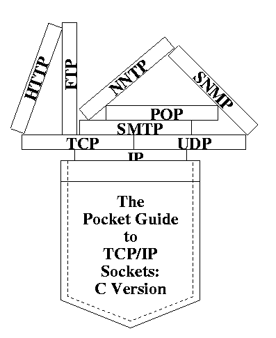

Pocket Socket Guide

Welcome to the Pocket Socket Web site. The
new edition
of this book is part of the
Practical Guide
series. We hope to use this site to enhance your experience with the "The Pocket Guide to TCP/IP Sockets: C Version".
Example code from text
Winsock adaptations of text code
Sample programming exercises
Errata